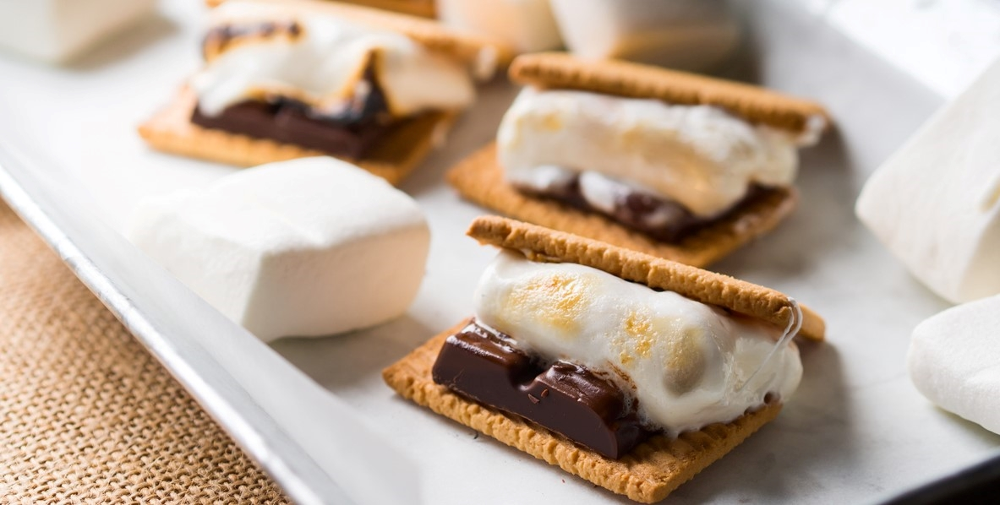
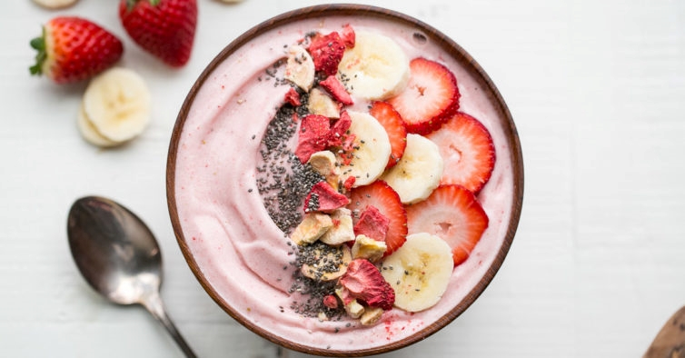

| Torta de Limão | ||
|---|---|---|
|
|
||
| Ingredientes | Modo de Preparo | |
| Massa | 200g de Biscoito Maisena | Triture o biscoito de maisena em um liquidificador ou processador. Junte a margarina e bata mais um pouco. Despeje a massa em uma forma de fundo removível (27 cm de diâmetro). Com as mãos, espalhe os biscoitos triturados no fundo e nas laterais da forma, cobrindo toda área de maneira uniforme. Leve ao forno médio (180° C), preaquecido, por aproximadamente 10 minutos. |
| 150g de Margarina | ||
| Recheio | 1 lata de leite condensado (395 g) | Bata todos os ingredientes no liquidificador (exceto as raspas de limão) até obter um creme liso e firme. Recheie a massa já assada e leve à geladeira por 30 minutos. |
| 1 caixa de creme de leite (200 g) | ||
| suco de 4 limões | ||
| raspas de 2 limões | ||
| Cobertura | 3 ou 4 claras de ovos | Bata as claras em neve e acrescente o açúcar. Misture até obter um ponto de suspiro e leve ao forno até dourar. Desenforme a torta (sem retirar o fundo falso), despeje a cobertura e acrescente as raspas de limão. |
| 3 colheres (sopa) de açúcar | ||
| raspas de 2 limões para decorar | ||
| S'mores | |
|---|---|
|  | |
| Ingredientes | Modo de Preparo |
| 150 g de chocolate meio amargo picado | Derreta o chocolate de 30 em 30 segundos no micro-ondas. Quando estiver derretido coloque na sua assadeira e por cima distribua os marshmallow. Leve ao forno preaquecido 180C por cerca de 8 minutos ou até o marshmallow derreter. Sirva com biscoitos de sua preferência |
| 100 g de Marshmallow | |
| Biscoito de sua preferência | |
| Smoothie de Morango | |
|---|---|
|  | |
| Ingredientes | Modo de Preparo |
| 1/2 copo de leite gelado | Bata todos os ingredientes no liquidificador e sirva imediatamente. Bananas congeladas produzem um smoothie parecido com sorvete (perfeito como sobremesa), enquanto que bananas frescas produzem um smoothie mais líquido (ótimo no café da manhã ou no lanche). |
| 3 pedras de gelo picado ou moído | |
| 3/4 de um copo com morangos picados e congelados | |
| 1 banana em rodelas congelada ou fresca | |
| açúcar (opcional) | |
| Link das Receitas | |
|---|---|
| Receita | Link |
| Torta de Limão | https://www.tudogostoso.com.br/receita/104383-torta-de-limao.html |
| S'mores | https://cooknenjoy.com/smores/ |
| Smoothie de Morango | https://receitas.globo.com/smoothies-simples-4f8680d5d72541744000003f.ghtml |